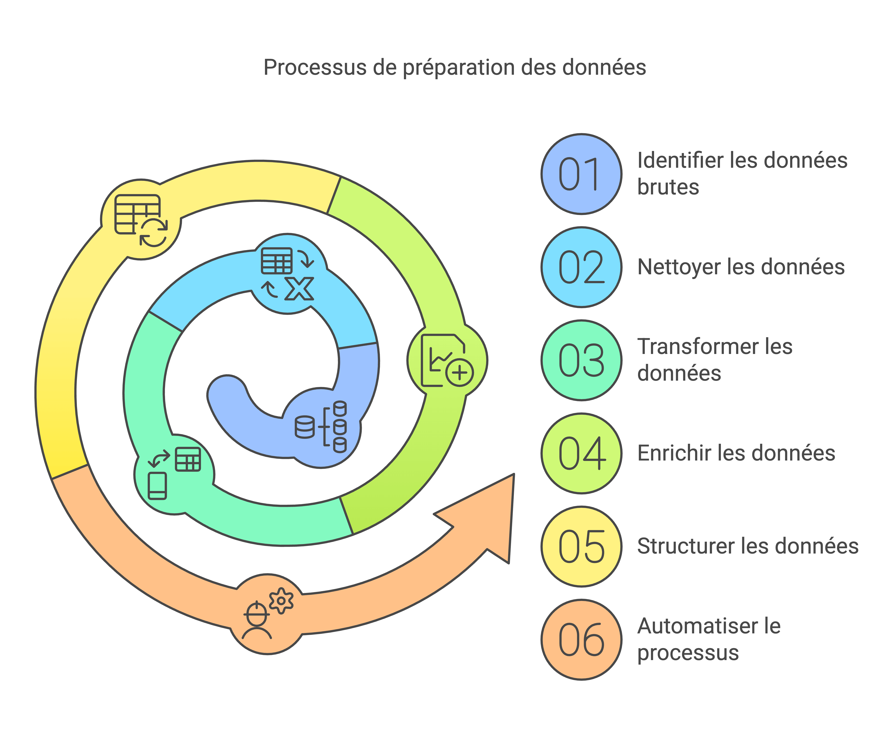

Une approche structurée pour transformer les données
en outils d’aide à la décision utiles et lisibles.

Ma méthode de travail
J’aborde chaque projet comme un processus de construction : partir de données parfois complexes ou hétérogènes, pour aboutir à des analyses compréhensibles, fiables et directement mobilisables par les acteurs concernés.
1. Comprendre le besoin et le contexte
Avant toute analyse, je prends le temps de comprendre les enjeux, le cadre réglementaire, les contraintes de diffusion et les usages attendus.
- Clarification des objectifs
- Identification des publics cibles
- Analyse du contexte territorial et institutionnel
2. Structurer et fiabiliser les données
La qualité de l’analyse repose sur la qualité des données. Cette étape est centrale dans mon travail.
- Nettoyage et contrôle des sources
- Harmonisation des formats et des référentiels
- Documentation des choix méthodologiques
3. Analyser et mettre en perspective
Les chiffres n’ont de sens que replacés dans leur contexte. J’accorde une attention particulière à la lecture territoriale, sociale et temporelle des données.
- Analyses descriptives et comparatives
- Construction d’indicateurs pertinents
- Mise en perspective des résultats
4. Restituer pour décider
La restitution est pensée comme un outil de dialogue et d’aide à la décision, pas comme une simple sortie graphique.
- Tableaux de bord lisibles et pédagogiques
- Cartographies et visualisations adaptées
- Accompagnement à la lecture des résultats
Outils mobilisés
Je choisis les outils en fonction des objectifs, des contraintes techniques et des usages finaux.
Structuration & calcul
- Excel (avancé)
- Google Sheets
- SQL
Analyse de données
- Python (pandas, numpy)
- SQL
Datavisualisation & restitution
- Power BI
- Google Looker Studio
- Tableau
Cartographie
- QGIS
Collaboration & diffusion
- GitHub
- Outils collaboratifs Google
- Fichiers Excel partagés
Ce qui guide mon approche
- Rendre les données compréhensibles pour des publics non techniques
- Concevoir des outils réellement utilisés sur le terrain
- Respecter les contraintes réglementaires et de diffusion (RGPD)
- Inscrire les analyses dans une logique de service public